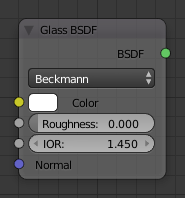
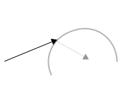
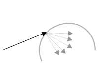
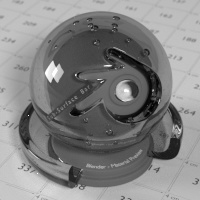

Glass BSDF¶

Glass BSDF.
Вузол Glass BSDF використовується для додання склоподібного відтінювача як суміші заломлення та відбиття на кутах торкання. Подібний до прозорого відтінювача Transparent, але тільки чисто білий колір робить його прозорим. Цей скляний відтінювач тяжіє давати шум через каустику. Оскільки інтегратор простеження променя в Cycles не є дуже добрим для рендерингу каустики, то рекомендується комбінувати скляний Glass та прозорий Transparent відтінювачі для тіней; детальніше тут -- more details see here.
Уводи -- Inputs¶
- Колір -- Color
- Колір поверхні, або фізично кажучи, ймовірність того, що світло пропускається для кожної довжини хвилі.
- Шорсткість -- Roughness
- Впливає на різкість відбиття; ідеальна різкість при 0.0 та згладженіша різкість при вищих значеннях.
- Показник Заломлення -- IOR
- Показник заломлення -- Index of refraction (IOR), що визначає, наскільки промінь змінює напрямок. При 1. 0 промені проходитимуть прямо крізь, ніби через прозорість; вищі значення дають більше заломлення.
- Нормаль -- Normal
- Нормаль, використовувана для відтінення.
Властивості -- Properties¶
- Розподіл -- Distribution
- Дивіться детальніше тут -- Glossy BSDF.
Виводи -- Outputs¶
- BSDF
- Стандартний вивід відтінювача.
Приклади¶
| Скло з різкими відбиттями | Скло з шорсткою поверхнею |
|---|---|

|

|

|